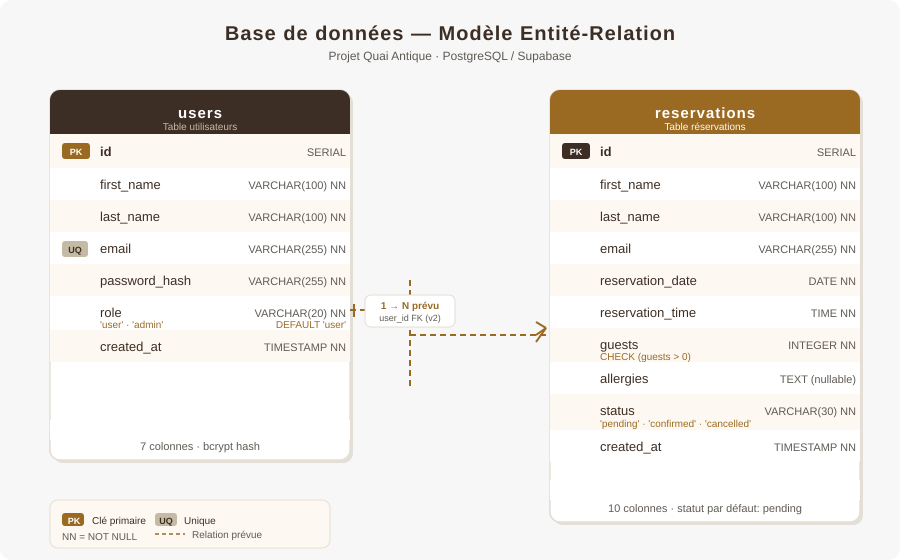
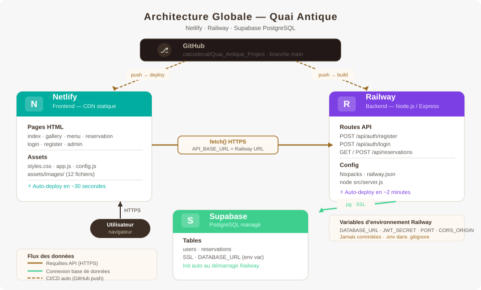
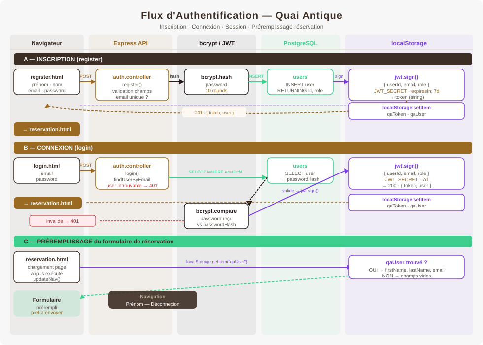
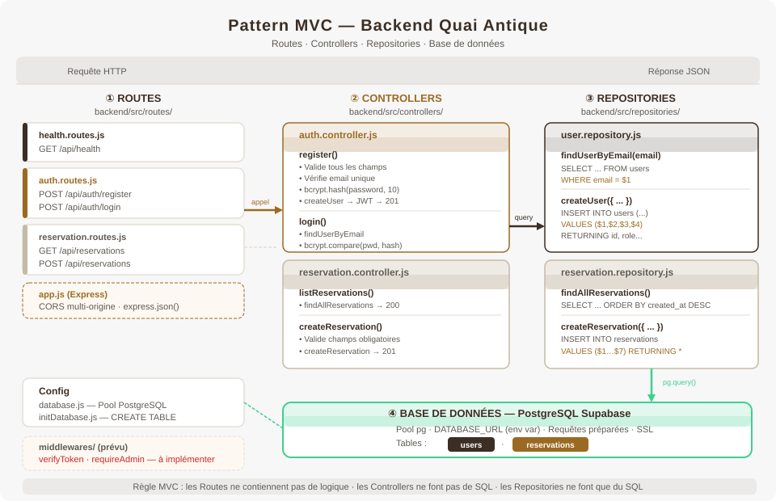

Pour intégration dans la présentation DWWM · SVG vectoriel · compatible PowerPoint / PDF

Tables : users (7 colonnes, bcrypt hash, rôles) et reservations (10 colonnes, statuts). Relation user_id FK prévue en v2.

Flux complet : Netlify (frontend statique) → Railway (API Express) → Supabase (PostgreSQL). CI/CD automatique depuis GitHub.

3 phases : inscription (bcrypt + JWT + localStorage), connexion (compare + JWT), préremplissage réservation (lecture localStorage).

Routes → Controllers → Repositories → PostgreSQL. Chaque couche a un rôle unique. Middlewares JWT prévus mais non encore implémentés.